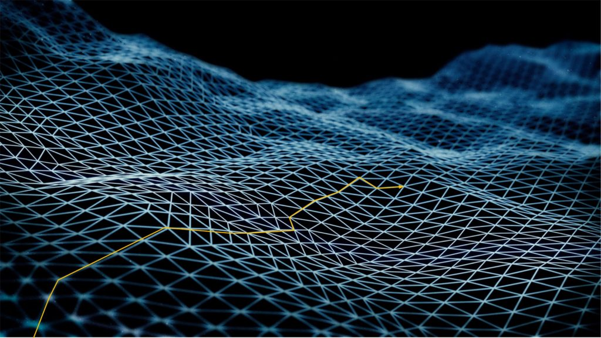
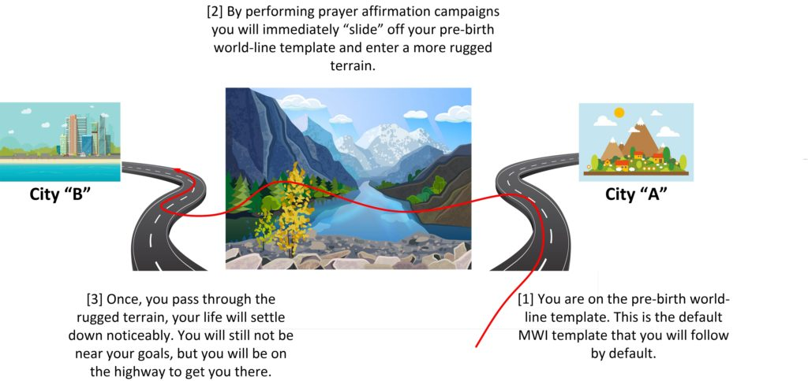
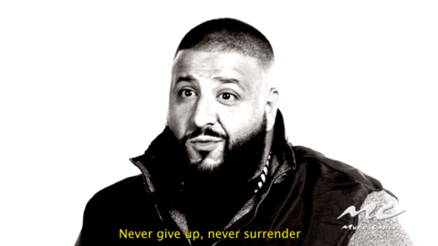

This article describes a different way of looking at the MWI and prayer affirmation campaigns. So far, I have described two methods of looking at the situation.
The first [1] is by pre-birth world-line template maps and their topography. The second [2] is by looking at a movie projector and viewing the individual frames.
This article discusses a third way to look at an affirmation prayer campaign. [3] It discusses affirmation prayer campaigns as highways.
I personally believe that there are many different ways to look at the same thing. There is no “one size fits all”, and thus to reach the widest and biggest audience, you need to make sure that you understand what you are looking at, from you own unique point of view.
This entire methodology came into being when I was trying to describe WHY a person goes though a period of discomfort when they start doing their own individual affirmation prayer campaigns.
Why consider this visualization?
Everyone who has ever been involved in a serious MM style prayer affirmation campaign will attest that shortly afterwards, all Hell will break loose. Thing will go wrong, and there will be all sorts of discomfort and trouble and trial and pains. And so people have asked me “why is this so”? They say “why can’t I just ask for the things an pray for them and then they appear?” And I respond that it is complicated. And to explain this complication, I use this analogy. I do hope that you all can understand it.
To begin with…
When we are born, we are issued with a pre-birth world-line template. This is a map that we will follow that will map out all the world-lines that we are most likely to encounter during our lives. It’s not perfect, and we can certainly alter our course, but for most people this is the fated life that they will live. I have drawn it as a map on a grid. Like this…
And upon that map I have laid out paths or a path that the consciousness would probably follow as they live their life. Such like this below…

And I have also discussed “slides”. Where you “slide” off the template on to a completely different template map and then use it to base your life upon. Much like this illustration… You are on a “rocky” pre-birth world-line template, and you are moving somewhere. Then you start doing your prayer affirmation campaigns, and they take you off your map. You “slide” to a new world-line template.
/wp:post-content wp:image {"id":38005,"sizeSlug":"large"}
Well, the purpose of the “highway map” method of viewing the MWI and world-line travel is to be able to better understand what the “slide” is like.
Describing what a “slide” is like
Now, of course, during my MAJestic operations the slides were instantaneous, and without turmoil. But that was planned that way, and most people don't have the ability to pick and choose when to slide off the template. It just starts happening the moment they run an affirmation campaign.
Anyways, this article was spawned from this forum comment…
I know, I know... it’s this guy and his theories again... but maybe - So I started my first affirmation campaign about 4 weeks ago. First - holy cow do things get uncomfortable! I didn’t think things could get more uncomfortable! I know MM wrote about this which is why I came up with this. No matter how uncomfortable it has been-and I am not complaining - but it seems like there are little “beams” of hope that come along. Like random people that just say hello in the store or send a text - from people I haven’t heard from in YEARS - just saying hi. But even with animals-there is a pissed off guard dog on my run who ALWAYS barks. Since the other day I get wags. So has this happened to you all and what direction would you go if you were me. The beams feel just like that. A REAL warm “beam” that hits only for a few seconds. Here is where the Newton meets the Quanta - In “normal” neurochemistry things don’t really work like that. Yes, there are delayed responses, but those use a different pathway than the “hot/cold” pathway. The hot/cold pathway is very quick. But anyway a few minutes later I will have this rush of “it’s all good, it will work itself out” but magnified. Can it be either other quanta or my own that I am not connected to? or can it be coming from within? From our ancestors that can communicate via our DNA? From above or below so to speak? The theory is that it’s quanta, not using a neurochem pathway, from others/myself OR Ancestors connecting via DNA - how - that’s something to find out but it IS there for me and it’s noticeable. Any thoughts?
. . This is EXACTLY how it happens.
Thanks for contributing this.
Doing a full spectrum affirmation prayer campaign is not for the faint of heart. There is going to be turmoil until you get on the right template.
I had a podcast where I described the pre-birth world-line template as a highway that you are on.
The highway description method to explain why affirmation campaigns cause initial discomfort.
Here, we describe the pre-birth world-line template as a highway.
And in this example we are going to say that your pre-birth world-line template is a highway going off to a city in the mountains. And for our purposes here, we will refer to this city as the “shining city in the mountains, city A”.
And that is all fine and good.
The highway is a direct route towards city “A’. Which is in the mountains. And you are on it, and you are heading straight towards where it will take you.
But you do not want to go to city “A” and the longer that you are on this highway, the more unhappy you get. You really yearn to be somewhere else, doing something else in another city. City “B”
You see, your goal is to go to the ocean, and live in the beaches, and you have decided to go to city “B” which is right there on the beach.
But to get to the highway that takes you to City “B” you need to perform a slide.
As described previously, a slide takes you off your pre-birth world-line template onto a brand new template.
And we are going to visualize this effort as getting off the highway going to city “A” and crossing over the median strip to another highway going off to city “B”.
Crossing the wide expanse of countryside…
Once you leave your very comfortable highway towards city “A” you will start to feel discomfort. You will need to cross over country fields, forests, deserts, walls, fences, and strange boggy swamp. And it’s going to be uncomfortable.

For here you are riding in comfort towards city “A”, and suddenly you get off the road and area now neck deep in swamp muck, being bit my mosquitoes and wild wolves are circling you and growling.
It’s scary and frightening.
But every now and then, just when you are staring to have doubts, you see glimpses of city “B”.
Or maybe not the city, but a whiff of sea air. A fresh breeze, the smell of BBQ chicken on a grill, and some tropical trees.
And that is exactly what many of you are going through now on your first affirmation prayer campaigns.
The Terrain between…
Everyone’s experience will be different, and it will depending on where you are now, and where you want to go.
It will depend on what you say, and how you think, and it will depend upon the accumulated “talent” you have in doing affirmation campaigns.
But EVERYONE will experience discomfort when you start changing your life.
As far as I can tell, there really isn’t any way to predict the kinds of hardships that you might encounter. It depends on the “distance” between the two “highways”, the speed and ease of travel on your current “highway”, and the terrain “types” that separate the two “highways”.
For some people, it might not be so bad. Their terrain might be easy to traverse.
Though, I can tell you that it will be quite different for different people…
For some, the terrain might have some treacherous spots, but will mostly be calm…
For others, however, the terrain might be rocky, dangerous and trying.
But the discomfort is good.
It tells you that you are on the way to a better life that you determine.
That’s Good.
Not bad, but it sure is uncomfortable.
And for some it might be unbearable.
But please keep on the effort.
Do the prayer affirmation campaigns rigorously. Do not give up. Never give up. Never, never, ever give up. On and off. On and off. On and off.
Do not be passive about it.
Never give up.
Go one by one. Keep on trying. Some days you are just going to want to give up. You are going to say “heck with this”. Do not do it.
Pace yourself.
It will end.
I promise you that.
I promise you that in five years your life will not resemble anything like you experience right now.
It will be so different.
So…
Never give up.
No matter how bad it is. No matter if your marriage is falling apart and your entire world seems to have gone to shit. never give up.
The entire time keep pushing. Do your affirmations campaign for the set period of time and then stop for an exactly equal amount of time.
Follow the formula.
Never give up.
Never give up. Never surrender!
Well, you wanted change, right?
What?
Do you think that it would be easy?
That all you would need to do is write down some wishes and then one day they all come true for you? Is that what you thought?
Nope.
You need to reset the quantum associations with your new goals; that city “B”. And that is probably going to be painful.
Everything in your life right now is all geared up and set up for city “A”.
And you need to change that.
But, but…
Sure, you might want the changes sooner. Well, the good news is some changes will manifest sooner than others. they will. But if you keep on sailing towards your goal. You will get there. YOU ARE IN CONTROL OF THE WMI. YOU ARE “GOD”. .
The discomfort is when you are going from highway to city “A” in the swampy bogland. Then when you arrive at the highway to city “B”, things will be noticeably better. Though you will not yet be at your goal. Which is “City “B” on the sea”.
The procedure is like this…
- [1] Get off the highway to “city A”.
- [2] Go through the jungles, forests, and wildlands to get to the other highway.
- [3] Get onto the highway to “city B”.
- [4] Keep on driving until you arrive at “city B”.
- [5] Arrive at “city B”.
The problem for most people.
For most people, step [2] is the stopper.
They go only as far as until they hit this bogland and stop.
Then eventually they crawl back to the old familiar highway to city “A”.
I warn… Don’t give up.
The bogland is scarier than it actually is. And it doesn’t last forever. It is finite. You can get though it (unless your goals are truly impossible – like being able to grow wings and fly). And most people do go though this.
Listen to me.
Keep going forward. Some days it will seem that you are hardly making any progress. Ignore that. Just keep going. Do not give up.
Keep this in mind. You need to do is understand that you are so close. You are so very close.
When you start feeling the discomfort, that means that your life is changing.
YOUR LIFE IS CHANGING.
It is changing!
And I can tell you that when you get to [3], most people won’t notice it except to say “my life seems to be easing up some”.
But then, you keep on going on.
On and off.

On and off. And before you know it you are on the highway to “city B”. And then it’s much, much easier.
I tell you the truth.
Follow you dream. Do not allow anyone to tell you that you cannot have it.
Never give up on your DREAM!
Keep on going.
The problems will ease up once you get on highway to city “B”. But you still won’t be at your goal. That won’t matter.
Not actually.
Your life will be noticeably different.
You will be able to see the difference, and then one day, you will wake up, look around and say “Yeah. My life IS different. It IS better. And no, it is NOT what I expected.”
Welcome to world-line travel on the MWI.
Be a fighter.
Take the blows.
Eventually you will see that all the problems will fall away like ripe fruit on the vine.
Just keep on plugging away. One day at a time. One affirmation reading a day. Day after day, and then stop with the campaign ends.
Be the fighter for your DREAM!
Conclusion
Change will come with discomfort. There is no other way around this fact. But it is a guaranteed way to see how well your life is changing.
You must feel discomfort to have things change.
That is the way it works.
Perhaps you wanted a much deeper conversation regarding other aspects of quanta and DNA and biological influences on a constantly changing MWI template map. And those are certainly interesting topics for discussion. But, for now, I really just want you to achieve your goals.
I want you to be happy.
I don’t want you to be fearful.
There are others. Some in Europe. A few in Africa. One in the Americas that do not post publicly. But they do write to me via email. And they all have their own personal issues.
The guys in Africa have a rough road … not an impossible on … just rough, and that means that the “bogland, and forests” that they must pass through are truly frightening. They are full with ferocious beasts, dangers, horrible things that slither in the darkness, and horrible nasty insects.
But they will get though it.
Put up your protections. Run your affirmation campaigns without stopping. Do everything in your ability to achieve your goals. You will get out of the nasty dangerous wilds before the highway. Focus on the goal. But look forward to the highway. Trust me, things will be much easier for you once you reach the new highway.
Oh…
And one more thing.
Be strong.
Do not give up. Never give up.
Never give up.
Never. Ever. Ever. Ever. E.V.E.R. give up. Fight for what you want.
Fight, and fight, and fight, and fight.
When it gets hard, keep it up. Don’t give up. No excuses.
Be the robot that will never give up. You get punched down, and you get right back up and keep on fighting.
Fight. Fight HARD. Never give up.
.
Even if you are on your knees, and are being pummeled left and right, keep it up. Don’t give up.
Keep fighting.
Fight until you cannot. As you lie there, blood running from between your smashed teeth, open your one swollen eye, push yourself up off the floor. And keep on fighting.
Never give up. Never Surrender.
I believe in you.
Oh, and one last point.
Maybe I wasn’t clear enough. Maybe you all thought I meant that things might be a minor inconvenience. Maybe you thought that is was just some minor day to day problems that might be an irritant. Nope.
Some of the turmoil can get pretty bad.
Depending on your goals and your “Highway”, it can be pretty awful. So you absolutely MUST have affirmations that compensate so that the upset and disruptions and pain isn’t all that horrible. And during this period, when things are really bleak and the entire world seems like it is personally shitting on you, I implore you to remember these words…
Never give up.